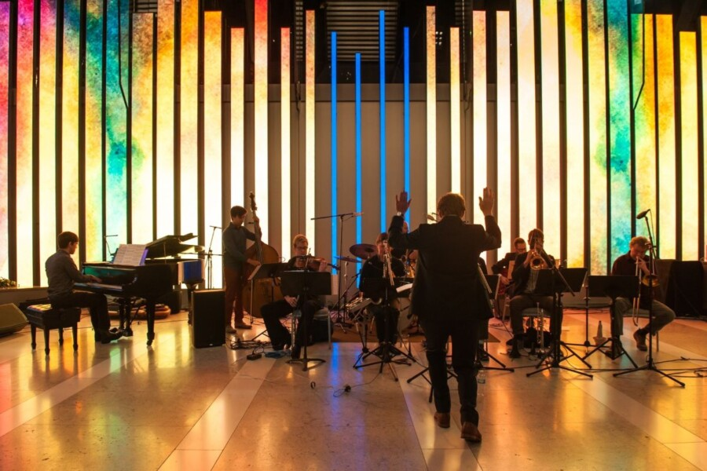

Tonal Conversations: The Promise
Tonal Conversations, the ongoing project by artists Anne Beal and Christopher Zuar, returns to 150 Media Stream on Thursday, June 4th, to present The Promise, a new audiovisual concert of chamber music and painted animation!
Please join us in the lobby of 150 N Riverside Plaza for two unmissable performance events at 12pm and 6pm, including an artist talk during the evening event. As always, these events are free and open to the public. We hope to see you there!
PERFORMANCE EVENTS:
12pm – 1pm / Lunchtime Performance
6pm – 8pm / Evening Reception (performances at 6pm and 7pm, artist talk at 6:30pm)
The Promise is a 6-piece chamber music composition by Grammy-nominated composer Christopher Zuar with painted animation by renowned filmmaker Anne Beal, featuring string quartet, piano, and clarinet. The work chronicles a difficult period in the artists’ lives: managing an illness in uncharted territory amidst a global pandemic, the death of a close family member, and a new marriage alight with promise. In their respective art forms, the artist duo explores themes of love, growth, self-forgiveness, and internal commitment, despite the external uncertainty of our times.
The painted animation from The Promise will remain on view at 150 Media Stream’s permanent video wall structure through September 5th, 2026, during regularly scheduled hours.
ANIMATION VIEWING HOURS: